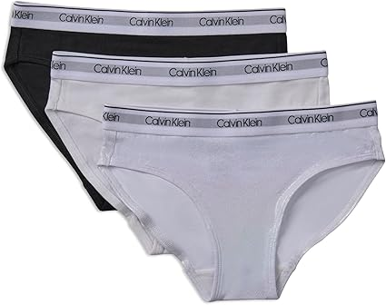

Ropa Interior
Bikini de Calvin Klein.

Material: Fabricado con 57% algodón, 38% Modal, 5% licra.
Lo suave de estos bikinis no solo añade un toque de estilo, sino que también mejora la comodidad, asegurando un uso sin irritación.
Color Negro/Gris/Blanco.
Talla 12 a 18 meses.
US $7.95
Instrucciones de cuidado del material: Lavar en la lavadora.
Opción:
Talla S
Talla M
Talla N
Talla L